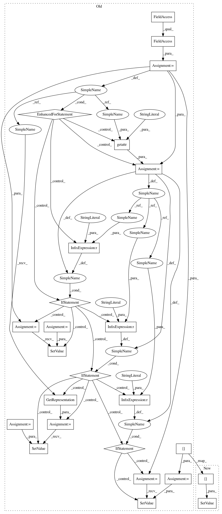

f6e036d8191b00fc407cdcbc4965f71d84a9878d,mne/viz/_brain/_timeviewer.py,_TimeViewer,restore_user_scaling,#_TimeViewer#,368
Before Change
def restore_user_scaling(self):
self.brain.update_auto_scaling(restore=True)
fmin = self.brain._data["fmin"]
fmid = self.brain._data["fmid"]
fmax = self.brain._data["fmax"]
for slider in self.plotter.slider_widgets:
name = getattr(slider, "name", None)
if name == "fmin":
slider_rep = slider.GetRepresentation()
slider_rep.SetValue(fmin)
elif name == "fmid":
slider_rep = slider.GetRepresentation()
slider_rep.SetValue(fmid)
elif name == "fmax":
slider_rep = slider.GetRepresentation()
slider_rep.SetValue(fmax)
def toggle_playback(self):
self.playback = not self.playback
if self.playback:
time_data = self.brain._data["time"]
After Change
self.brain.update_auto_scaling(restore=True)
self.fmin_slider_rep.SetValue(self.brain._data["fmin"])
self.fmid_slider_rep.SetValue(self.brain._data["fmid"])
self.fmax_slider_rep.SetValue(self.brain._data["fmax"])
def toggle_playback(self):
self.playback = not self.playback
if self.playback:
In pattern: SUPERPATTERN
Frequency: 3
Non-data size: 25
Instances
Project Name: mne-tools/mne-python
Commit Name: f6e036d8191b00fc407cdcbc4965f71d84a9878d
Time: 2020-01-28
Author: guillaume.favelier@gmail.com
File Name: mne/viz/_brain/_timeviewer.py
Class Name: _TimeViewer
Method Name: restore_user_scaling
Project Name: mne-tools/mne-python
Commit Name: f6e036d8191b00fc407cdcbc4965f71d84a9878d
Time: 2020-01-28
Author: guillaume.favelier@gmail.com
File Name: mne/viz/_brain/_timeviewer.py
Class Name: _TimeViewer
Method Name: apply_auto_scaling
Project Name: mne-tools/mne-python
Commit Name: 26e38513ca7be1a96b012f0853c832b2ec3b2e9f
Time: 2020-04-20
Author: guillaume.favelier@gmail.com
File Name: mne/viz/_brain/_timeviewer.py
Class Name: UpdateColorbarScale
Method Name: __call__
Project Name: mne-tools/mne-python
Commit Name: f6e036d8191b00fc407cdcbc4965f71d84a9878d
Time: 2020-01-28
Author: guillaume.favelier@gmail.com
File Name: mne/viz/_brain/_timeviewer.py
Class Name: _TimeViewer
Method Name: restore_user_scaling